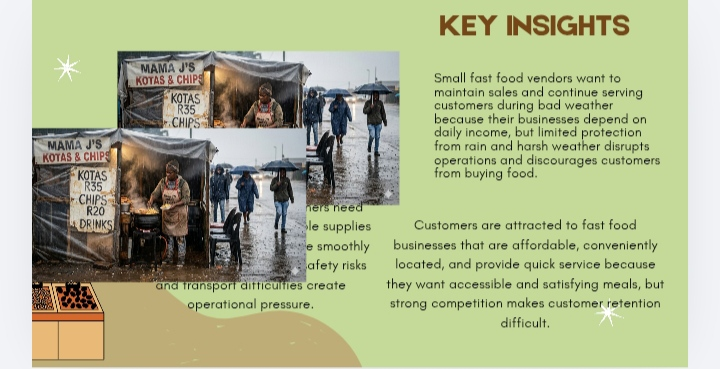
KEY INSIGHTS
What we learned
The research revealed important pain points that guided the next stage of the design process.
This Design Thinking project focused on understanding the challenges faced by small fast-food vendors who depend on daily sales to support their businesses.
Bad weather can prevent vendors from operating, damage food and equipment, reduce customer traffic and ultimately result in lost income.
The first stage focused on understanding the experiences, needs and challenges of the people affected by the problem.
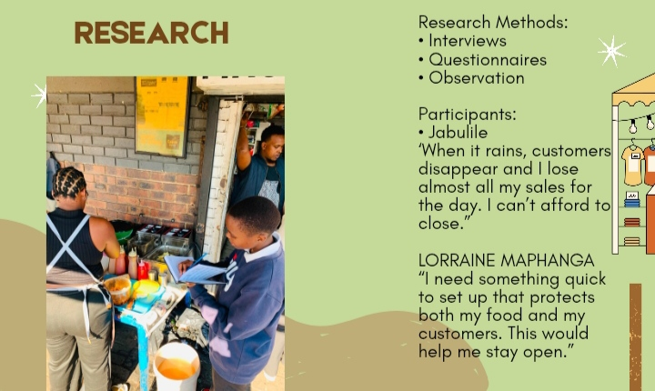
Research helped us understand the environmental, financial and operational challenges experienced by vendors.

The research revealed important pain points that guided the next stage of the design process.
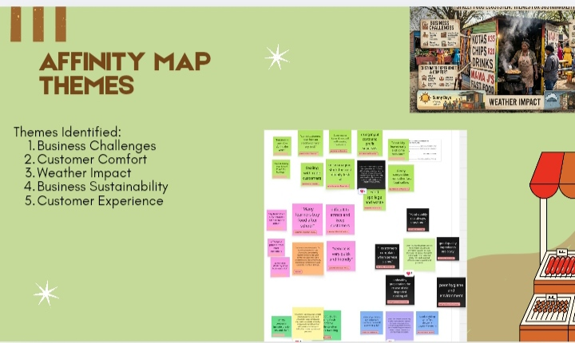
Research findings were grouped into themes to identify patterns and recurring problems.
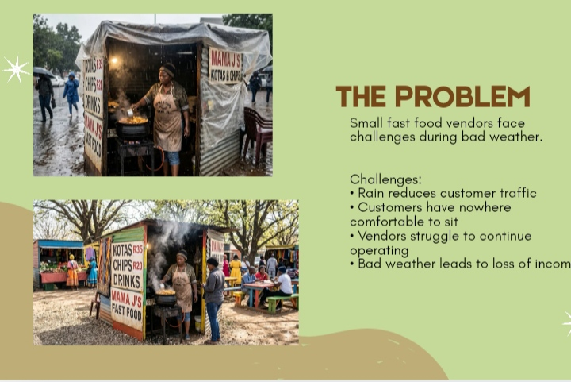
After analysing the research, we identified weather-related disruption as a major challenge for small food vendors.
Vendors need a practical solution that protects their business without requiring expensive permanent infrastructure.
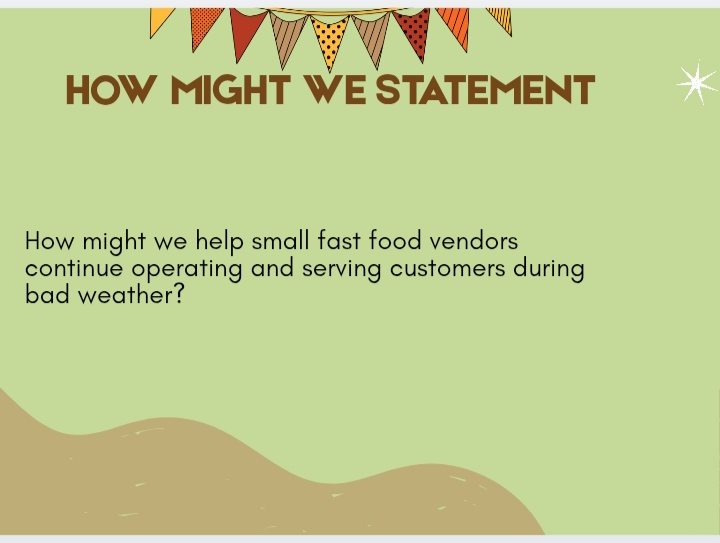
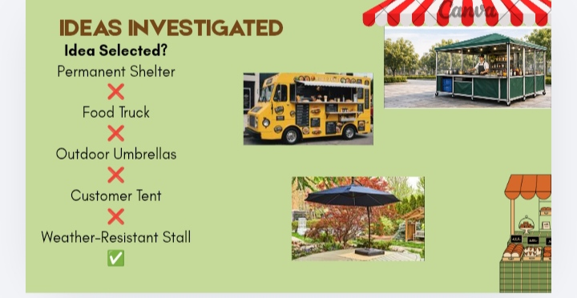
Different ideas were explored before selecting the most practical solution.
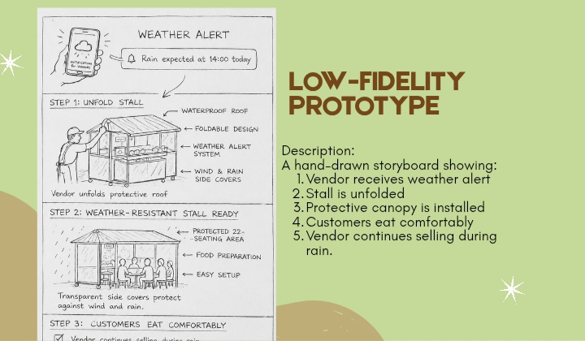
A simple prototype was created to communicate the basic structure, customer experience and setup process.
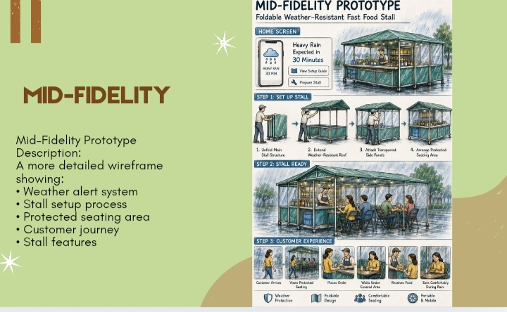
The concept was developed further to communicate the layout, features and user experience more clearly.
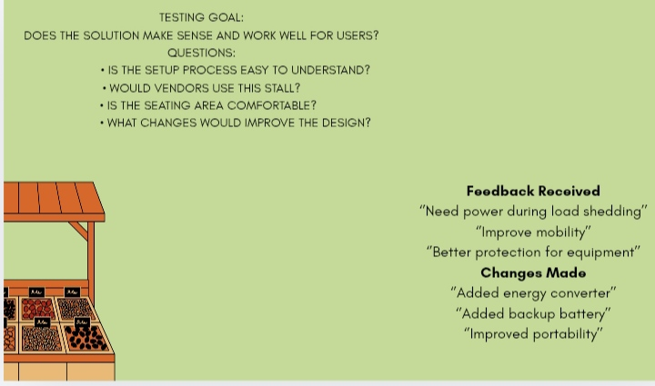
Testing focused on whether the proposed solution could protect vendors and customers while remaining practical and easy to use.
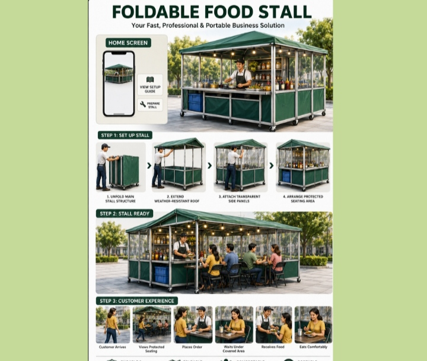
The foldable weather-resistant food stall provides vendors with a portable structure that can be quickly assembled, protects food and equipment, provides customer shelter and supports continued operation during difficult weather conditions.
Easy to transport and store.
Protects vendors, customers and food.
Designed for vendors who move locations.
Creates a more comfortable environment.
Helps vendors operate during load shedding.
Designed around real vendor needs.
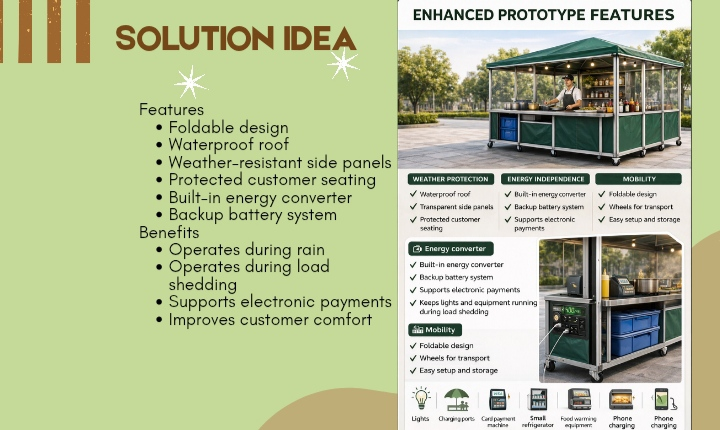